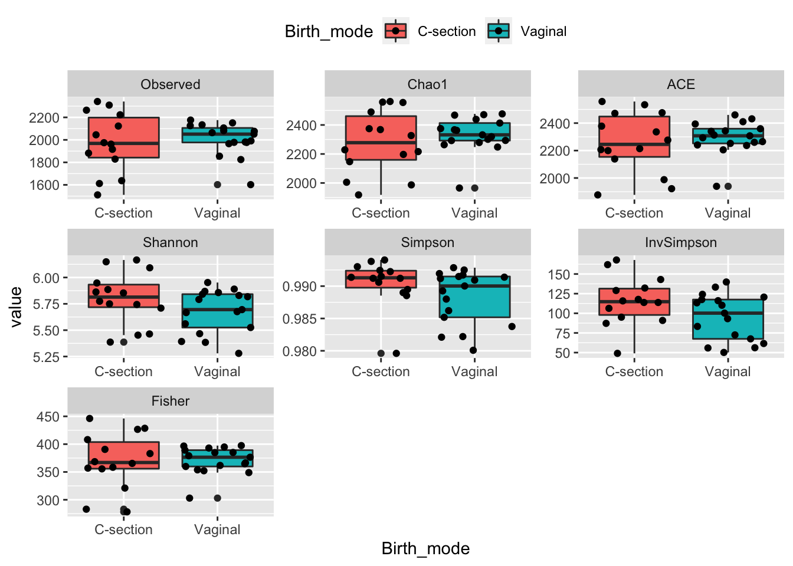

For each sample a single measure can be calculated describing the diversity within the sample. The most intuitive is how many different bacteria (OTUs) is observed. But there are others. The phyloseq package with the function plot_richness() supports seven different versions.
These can easily be calculated and visualized according to a given design.
library(ggplot2)
library(ggpubr)
library(phyloseq)
load('./data/Mice_csec.RData')
pp <- plot_richness(phyX)
AlphaD <- pp$data
ggplot(data = AlphaD, aes(Birth_mode, value, fill = Birth_mode)) +
geom_boxplot() +
geom_jitter() +
stat_compare_means(vjust = 1,method = 't.test') +
facet_wrap(~variable, nrow = 2, scales = 'free') +
theme(legend.position = 'top')
What you see here, is some indications of vaginal delivery results in lower diversity. However, due to the low n significance is hard to achieve.
Shannon diversity is a metric with relatively high dependency on rare OTUs. Simpson diversity (and Inverse Simpson) depends on the even-ness of the observed OTUs in the samples and is hence relatively independent on rare species, as is obvious from the mathematical formula. All three measures seems to be related to birth mode.
The alpha diversity metrics computed in phyloseq is not taking phylogentics into account. However, there is one commenly used method Faiths PD which can be calculated using the CRAN package picante. The calculation is easy, but adding it to all the other metrics, is a bit tricky:
library(picante)
PD <- pd(t(phyX@otu_table),phyX@phy_tree, include.root = F)
## Add it to the sample data
PD <- cbind(sample_data(phyX) %>% data.frame() %>% rownames_to_column('samples'),PD) %>%
gather(variable,value,PD,SR)
# ... and merge with the rest of alpha diversity values
AlphaD <- AlphaD %>% bind_rows(PD)In order to get more hands-on experience with alpha diversity and especially how different preprocessing techniques influences these metrics, the exercise below show case how inherent the stocastisity of the sequencing depth is in the data.
Rerun the above alpha diversity analysis with no preprocessing of the data
Library size (number of reads per sample), is in amplicon sequencing considered to be nuisance with NO biological interpretation at all. Compare each measure of alpha diversity with the library size. What is problematic? (You can take inspiration in the code below on how to do this in R)
libsize <- data.frame(libsize = sample_sums(phyX))
# merge
AlphaD$X.SampleID <- as.character(trimws(AlphaD$X.SampleID))
AlphaD <- merge(AlphaD, libsize, by.x = 'X.SampleID', by.y = 'row.names')
ggplot(data = AlphaD, aes(libsize,value)) +
geom_point() +
stat_smooth(method = lm) +
facet_wrap(~variable, scales = 'free')Two preprocessing techniques are investigated in terms their ability to remove the dependency on the library size. Namely rarefaction and OTU-filtering.
Rarefy the sample to even depth, and calculate the corresponding alpha diversity measures
phyXrare <- rarefy_even_depth(phyX)
AlphaDrare <- plot_richness(phyXrare)$dataMerge with the original library size and check if you had succes.
AlphaDrare$X.SampleID <- as.character(trimws(AlphaDrare$X.SampleID))
AlphaDrare <- merge(AlphaDrare, libsize, by.x = 'X.SampleID', by.y = 'row.names')
ggplot(data = AlphaDrare, aes(....)) + Now try to use a filter that removes rare taxa
phyXfilt <- filter_taxa(phyX,function(x) sum(x>0) > ??? , TRUE)
AlphaDfilt <- plot_richness(phyXfilt)$data
AlphaDfilt$X.SampleID <- as.character(trimws(AlphaDfilt$X.SampleID))
AlphaDfilt <- merge(AlphaDfilt, libsize, by.x = 'X.SampleID', by.y = 'row.names')
ggplot(data = AlphaDfilt, aes(...)) + What you have learned here is that sequencing depth - and its variation between samples - inherently affects data analysis. Preprocessing is capable of handling these issues, but only to some extend.
Xia, Yinglin, Jun Sun, and Ding-Geng Chen. Statistical analysis of microbiome data with R. Springer, 2018. Chapter 6.
Faith D.P. (1992) Conservation evaluation and phylogenetic diversity. Biological Conservation, 61, 1-10.